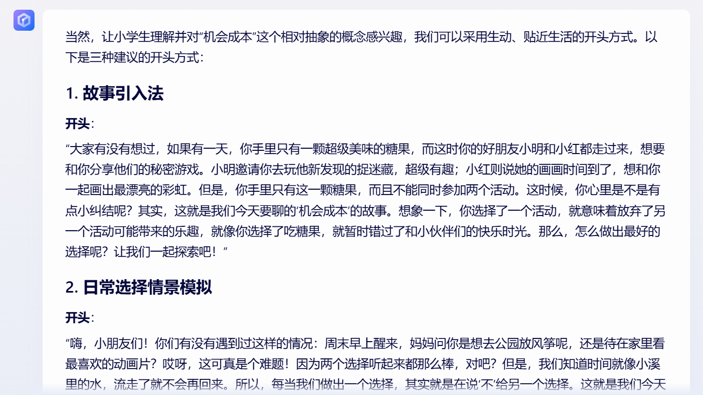

你是否常常看到网络上分享的 ChatGPT 案例，但自己用了后收到的答复并没有太大帮助？ 之所以会这样，是因为指令给的不够精确与到位。 要让 ChatGPT 发挥最大效用，你需要好的指令。 如果你不知道如何给出好的指令，不用担心，让 ChatGPT 指令大全来帮助你
下 ChatGPT 指令的要诀
在使用 ChatGPT 时，当你给的指令越精确，它的回答会越到位。 举例来说，假如你要请它帮忙写文案，如果没给予指定情境与对象，它会不晓得口吻该如何、回答该针对谁。 毕竟同样是洗发精的广告文案，对轻熟女与有掉发问题的人，会是两种不同诉求与论调的。 所以你必须让 ChatGPT 知道，他现在是什么角色、在对谁说话。
以写文案来说，你要让它知道目标受众是谁、文案风格如何，要不要加上表情符号等等。 以编程来说，如果要请 ChatGPT 帮忙写程序，你会需要注明它该用什么语言写 （例如 C++ 或 Python），以及用什么典范来写 （例如 Functional Programming 或 OOP）。
如何使用 ChatGPT 指令大全
在 ChatGPT 指令大全，我们有初步做好分门别类，以及附上每一类的常用指令。 点击类别后，就会自动过滤到该类别。 如果在你选择的类别中，有你可以用到的指令，只要点击指令卡片右上角的「复制」，该指令就会被复制。 这时开启 ChatGPT，可以右键贴上，或用粘贴。 贴到 ChatGPT 时，你会需要进一步，根据指令的模板，把你的实际内容放到模板中。 以下一个范例供大家参考。control + v
做报告为例
点击复制后，可以到 ChatGPT 中贴上。 贴上去后会像是下面的模板，这时请在自行替换掉模板中的字词
我现在正在 [ 报告的情境与目的 ] 。我的简报主题是 [ 某个主题 ] ，请提供 [ 数字 ] 种开头方式，要简单到 [ 目标族群 ] 能听懂，同时要足够能吸引人，让他们愿意专心听下去。
举例来说，可以把上面中括号替换成以下的例子
